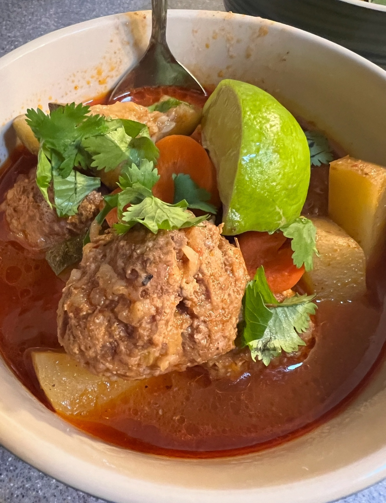

This spicy meatball soup features tender, flavorful meatballs simmered in a bold, savory broth packed with heat and rich spices. It's a hearty, comforting dish with just the right kick to warm you up from the inside out

Ingredients
Broth
1 large onion chopped
1 tbsp olive oil
3 dried Guajillo peppers
3 oz chipotle peppers in adobo
1/2 cup apple cider vinegar
1 tbsp ground cumin
1 tbsp dried oregano
1bsp smoked paprika
1 24 oz can crushed tomatoes
3 tbsp minced garlic
2 cinnamon sticks
2 tsp ground cloves
8 cups beef broth
2 bay leaves
3 large carrots
4 yellow or golden potatoes
2 zuchini, chopped
Meatballs
2 lbs ground beef
1 lb ground pork
2 eggs
1/2 cup chopped onion
1/2 cup uncooked rice
2 tbsp minced garlic
2 tsp ground cumin
garlic powder
1 tsp black pepper
1 tsp dried oregano
Instructions
Prepare the Broth Base
Boil the Guajillo Peppers:
Bring a pot of water to a boil. Add dried Guajillo peppers and boil for 15 minutes. Rinse under cool water, remove stems, and discard the seeds.
Sauté Aromatics:
In a large soup pot, heat olive oil over medium-low heat. Add chopped onions and sauté for 8–12 minutes, until softened. Stir in the minced garlic and cook for 1 more minute.
Blend the Broth Base:
In a blender, combine the softened Guajillo peppers, chipotle peppers in adobo, apple cider vinegar, cumin, oregano, smoked paprika, crushed tomatoes, and 4 cups of beef broth. Blend until smooth.
Simmer the Broth:
Pour the blended mixture into the soup pot. Add remaining 4 cups of beef broth, bay leaves, cinnamon sticks, and ground cloves. Stir in the sautéed onions and garlic. Simmer gently while you prepare the meatballs.
Prepare the vegtables
Mix the Meatball Ingredients:
In a large bowl, combine ground beef, ground pork, egg, onion, rice, garlic, cumin, garlic powder, black pepper, and oregano. Mix until just combined—do not overwork.
Form Meatballs:
Shape into 2-inch balls and set aside.
Cook the Meatballs:
Gently drop the meatballs into the simmering broth. Cook for 10 minutes. Or until the middle is not pink.
Add the vegtables
let broth simmer for 30 minutes to let spices blend.
Add carrots, potatoes, and zucchini to the pot. Boil for 5 minutes, then reduce heat to medium-low.
If needed, add 2–3 more cups of beef broth to keep everything submerged.
Simmer for an additional 20–25 minutes, or until the vegetables are fork-tender and meatballs are cooked through.
top with your choice of sour cream,celantro,lemon wedges.